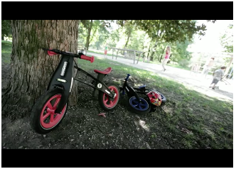
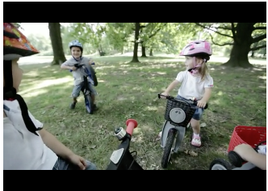

- Home
- About
- Bikes
- News
- Support
- Contact
- Blog
- Store
FIRST SENSE OF BALANCE
The perfect training bike for your child from 2 to 5 years old and the first choise
for parents worldwide. FirstBIKE supports the development fo a child's balance
and provides a no-stress method of learning to ride a bike.

